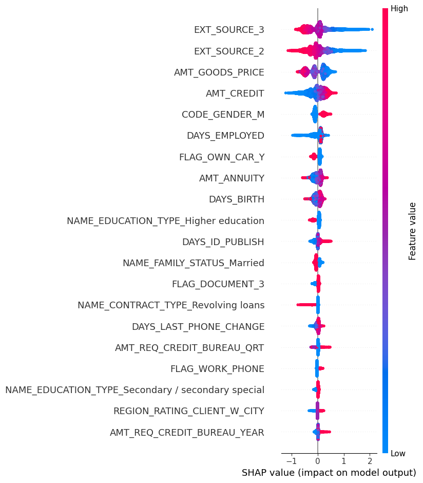

Credit Risk • Explainable AI
Credit Risk Decision System (XGBoost + SHAP)
Problem: A default-risk model is only useful if a credit team can trust and act on it — a black-box score isn't enough.
Approach: Engineered features from credit bureau data, trained an XGBoost model to predict Probability of Default,
and wrapped it in a business decision engine (Approve / Reject) with SHAP-based explainability behind every call.
Outcome: Shipped as an interactive Streamlit dashboard, so a reviewer sees not just the decision but why — which features pushed a case toward approval or rejection.
Impact ROC-AUC ≈ 0.75 predicting default, with every decision traceable to SHAP-ranked features in a live approve/reject dashboard.
